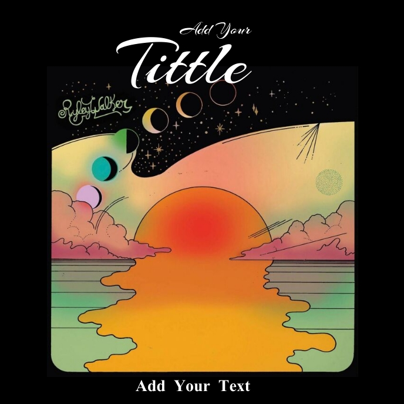

Recently Played

damn nigga!
unixnexo

Allrizo 1-Popcast episode 1-Remix for car, gym, and your store😎-ریمیکس خفن برای ماشین باشگاه مغازه
unixnexo
Gracing dreams on night
Luluia minio

why me!
Alexander lucas
Fuck you mother fucker
I fuck your sister
Fuck you mother fucker
I fuck your sister
Fuck you mother fucker
I fuck your sister
Fuck you mother fucker
I fuck your sister
Fuck you mother fucker
I fuck your sister
Hey unixnexo, you have
2 plays
LAST 7 DAYS
Artists you should follow
Refresh list
Ebi
200M
9,000
Inna Luishy
345
35
the great russian girl
3,413
2,423
8,762 likes
View all
kandlus
Sirvan - Khosravi - Bargard - 128k
107K
1,306
18
16
Casual Jam Records
YOTO - Wicked Game
9K
406
163
140
Lana Del Rey
Salvatore
2M
41.4K
862
553
Listening history
View all

Rassool Alinaghi
Radio Alizo 33
65.3K
1,777
5
0
ShahinNajafi
209
1K
69
85
34
BlVCH
Ey khoda - Hayedeh (Slowed)
20M
113.6K
12K
34.3K
- Legal -
- Verträge hier kündigen -
- Privacy -
- Cookie -
- Policy -
- Cookie Manager -
- Imprint -
- Artist -
- Resources -
- Blog -
- Charts -
- Transparency Reports
Language: English (US)

Home
Feed
Search
Library
Upgrade
Alesso, Nate Smith - I Like it
Alesso